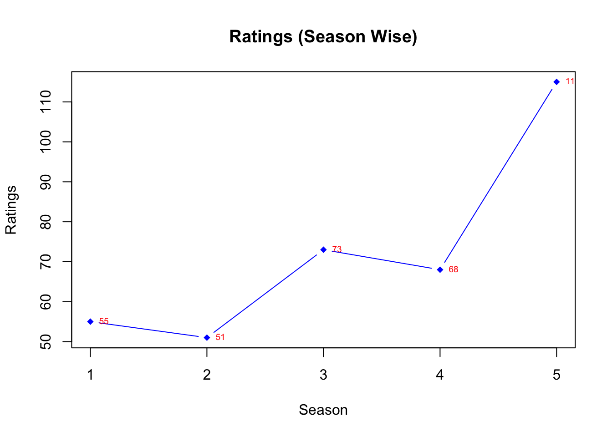
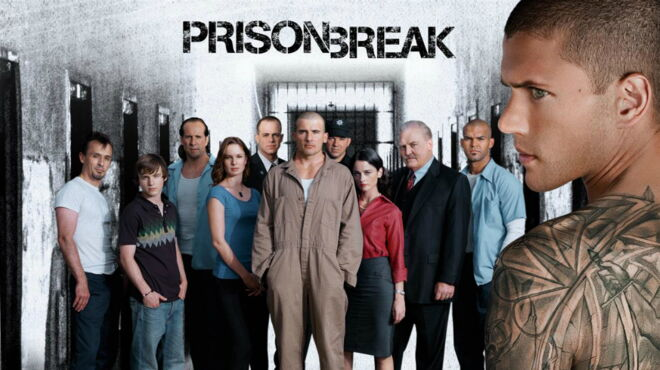
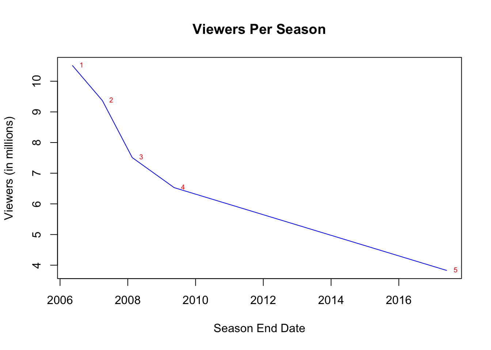

Prison Break Report
Prison Break
Prison Break is an American serial drama television series created by Paul Scheuring for Fox. The series revolves around two brothers, Lincoln Burrows (Dominic Purcell) and Michael Scofield (Wentworth Miller); Burrows has been sentenced to death for a crime he did not commit, while Scofield devises an elaborate plan to help his brother escape prison and clear his name.
Main Poster

Series overview and ratings
| Season | Episodes | First aired | Last aired | Rank |
|---|---|---|---|---|
| 1 | 22 | August 29, 2005 | May 15, 2006 | 55 |
| 2 | 22 | August 21, 2006 | April 2, 2007 | 51 |
| 3 | 13 | September 17, 2007 | February 18, 2008 | 73 |
| 4 | 22 | September 1, 2008 | May 15, 2009 | 68 |
| 5 | 9 | April 4, 2017 | May 30, 2017 | 115 |
Rating has improved in season 2 by 4 positions but season 3 and season 5 ratings are decreased very drastically by 22 and 47 positions respectively.
Seasonal Overview
The following seasonal data are based on a weighted average total viewers per episode as recorded by Nielsen Media Research. The recording period begins in late September (the start of the U.S. network television season) and ends in late May.
| Season | Time slot (ET) | Episodes | Premiered Date | Premiere viewers (in millions) | Ended Date | Finale viewers (in millions) | #Rank |
|---|---|---|---|---|---|---|---|
| 1 | Monday 9:00 p.m. (2005)/Monday 8:00 p.m. (2006) | 22 | August 29, 2005 | 10.51 | May 15, 2006 | 10.24 | 55 |
| 2 | Monday 8:00 p.m. | 22 | August 21, 2006 | 9.37 | April 2, 2007 | 8.12 | 51 |
| 3 | Monday 8:00 p.m. | 13 | September 17, 2007 | 7.51 | February 18, 2008 | 7.40 | 73 |
| 4 | Monday 9:00 p.m. (2008)/Friday 8:00 p.m. (2009) | 22 | September 1, 2008 | 6.53 | May 15, 2009 | 3.32 | 68 |
| 5 | Tuesday 9:00 p.m. | 9 | April 4, 2017 | 3.83 | May 30, 2017 | 2.30 | 115 |
